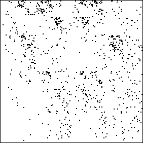

| One of the first possibilities
that occurs is to assign bins by parts of speech. |
| For example, one
bin might be for nouns, one for verbs, one for adverbs and adjectives, and one
for prepositions and conjunctions. |
| This method was used to generate the pictures below.
The left picture is this driven IFS rendition of Emerson's "Circles," the
right picture of Hawthorne's "Birthmark." |
|  |
|
|
| Emerson's "Circles" | |
Hawthorne's "Birthmark" |
|
This is the IFS encoding of parts of speech used here.
| T3 for prepositions, articles, or conjunctions |
T4 for nouns |
| T1 for verbs |
T2 for adjectives or adverbs |
|
| Unhappily, it appears that most of the patterns visible here
are consequences of grammatical constraints. |